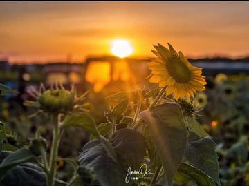

Our sunflower fields will be open every day from August 15th to September 7th. Visit Wickham Farms and surround yourself in the beauty of over 1 Million sunflowers during the Sunflower Spectacular. Walk our 8+ acres of sunflowers and take in the vibrant colors displayed in our 30+ different sunflower varieties. We offer all you need to pick-your-own bouquet and take a little piece of sunshine home with you.
*** The only way to guarantee admission to Sunflower Spectacular is to purchase tickets in advance online. We will also use timed ticketing on weekends to manage our capacity due to COVID-19. Once you enter the farm, you can stay as long as you’d like! Thanks for your cooperation, we look forward to seeing you soon! ***

General Admission:$15 Sunflower Only:$10
General Admission includes all day access to the sunflower fields, two cut your own sunflowers, and our Barnyard activities. The Barnyard experience includes our NEW Giant Corn Pit, Hide & Slide Mountain, a jumping pillow, a jumping pad, corn mazes, miniature golf, kiddie train ride, slides, animals, 3 apple cannon shots, hayrides (cannons are open on weekends only) and so much more!
Sunflower Only Admission includes all day access to the sunflower fields and two cut your own sunflowers.
You may visit during the week when attendance is lighter.
General Admission is $10 includes 2 sunflowers and the Barnyard. Please note not all activities are available during the week.
Sunflower Only Admission is $9 and includes 2 Sunflowers and an optional hayride to the field.
Admission is required for all guests ages three and over. Ages 2 and under are free.
Hours of Operation - 10 AM - 7 PM (6 PM LAST ENTRY to the fields and Barnyard Area ) PLEASE leave pets home for this event.
Looking for the perfect spot for family photos or senior pictures? Our sunflower fields, rustic barns, apple orchard, grapevines, and corn maze make beautiful backdrops for your photo shoot. Read our professional photography guidelines and contact office@wickhamfarms.com to arrange a time for you and your photographer to visit.
For the fourth year, we are excited to announce that we have partnered with Golisano Children's Hospital again. Wickham Farms will be donating sunflower bouquets in September 2020 to help #SpreadTheSunshine to all of the wonderful people staying and working at Golisano Children's Hospital. Help us Spread more Sunshine during these times of uncertainty.
Our farm is a working farm producing fruit and vegetables for public consumption. Due to food safety regulations, we ask that you please leave your pets at home. Carry-in food will not be permitted at this event. Thank you!